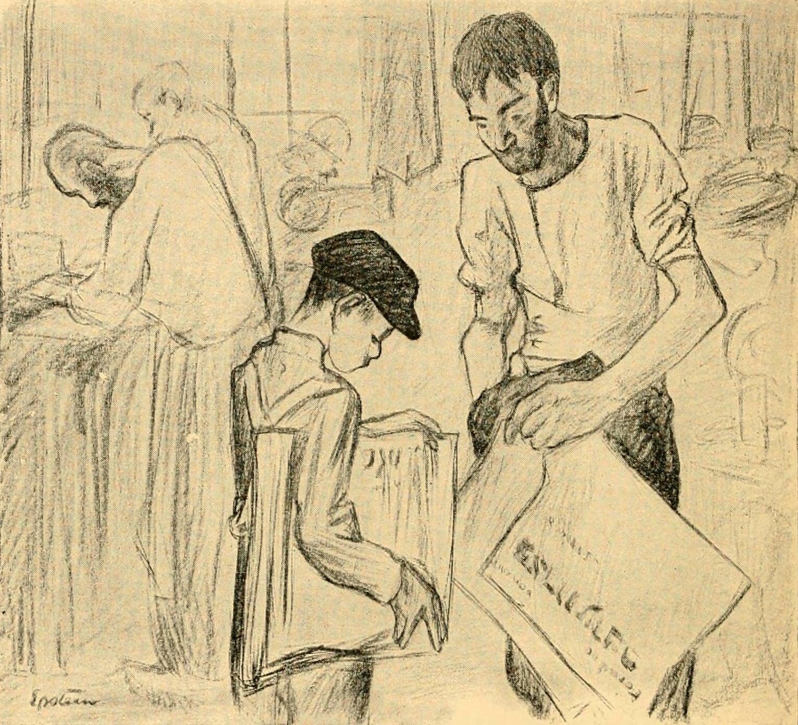

Data-Driven Newsvendor Problems
The newsvendor problem is a classic model in operations research. Imagine a newsboy who has to decide how many newspapers to buy each morning before knowing the actual demand. If he buys too many, he incurs a holding cost for unsold newspapers; if he buys too few, he incurs a penalty cost for lost sales. The objective is to find the optimal order quantity that minimizes the expected total cost.

{kind=link}
The Newsvendor Problem
Consider a single-period inventory problem where a retailer has to decide how many units of a product to order before knowing the actual demand. The objective is to minimize the expected cost
\[ \min_{q \geq 0} \mathbb{E}[C(q, D)], \]
where \(q\) is the order quantity, \(D\) is the random demand,
\[ C(q, D) = h (q - D)^+ + b (D - q)^+ \]
is the cost function, \(h\) is the holding cost per unit, and \(b\) is the penalty cost per unit of unsatisfied demand.
If the cumulative distribution function (CDF) of the demand \(F\) is known, the optimal order quantity \(q^*\) can be derived as
\[ q^* = \inf \{q : F(q) \geq \frac{b}{h + b}\}. \]
Sample Average Approximation
In practice, the true distribution of demand is often unknown, and we may only have access to historical demand data. In such cases, we can use the Sample Average Approximation (SAA) method to estimate the optimal order quantity. Levi et al. (2015) analyze the SAA approach for the data-driven newsvendor problem.
Given a set of historical demand samples \(\{d_1, d_2, \ldots, d_n\}\), we can formulate the SAA problem as
\[ \min_{q \geq 0} \hat{C}(q) = \frac{1}{n} \sum_{i=1}^{n} [h (q - d_i)^+ + b (d_i - q)^+]. \]
The empirical CDF \(\hat{F}\) can be defined as
\[ \hat{F}(q) = \frac{1}{n} \sum_{i=1}^{n} \mathbf{1}_{\{d_i \leq q\}}, \]
and the SAA optimal order quantity \(\hat{q}^*\) is given by
\[ \hat{q}^* = \inf \{q : \hat{F}(q) \geq \frac{b}{h + b}\}. \]
Example 1 (SAA for Newsvendor Problem) Suppose the holding cost is \(h = 1\) and the penalty cost is \(b = 3\), so the critical ratio is
\[ \frac{b}{h + b} = \frac{3}{1 + 3} = 0.75. \]
The retailer has \(n = 8\) historical demand observations:
\[ \{42, 55, 48, 60, 38, 52, 45, 58\}. \]
Sorting the samples in ascending order gives
\[ d_{(1)} = 38, \; d_{(2)} = 42, \; d_{(3)} = 45, \; d_{(4)} = 48, \; d_{(5)} = 52, \; d_{(6)} = 55, \; d_{(7)} = 58, \; d_{(8)} = 60. \]
The empirical CDF jumps by \(1/8\) at each sorted sample, i.e., \(\hat{F}(d_{(i)}) = i/8\). The SAA optimal order quantity is the smallest sample at which the empirical CDF reaches the critical ratio:
\[ \hat{q}^* = \inf \{q : \hat{F}(q) \geq 0.75\} = d_{(6)} = 55, \]
since \(\hat{F}(d_{(6)}) = 6/8 = 0.75 \geq 0.75\), while \(\hat{F}(d_{(5)}) = 5/8 = 0.625 < 0.75\).
In general, the SAA solution is the \(\lceil n \cdot \frac{b}{h+b} \rceil\)-th order statistic of the demand samples, i.e., \(\hat{q}^* = d_{(\lceil n b / (h + b) \rceil)}\). Here, \(\lceil 8 \times 0.75 \rceil = 6\), confirming that \(\hat{q}^* = d_{(6)} = 55\).
The Feature-Based Newsvendor Problem
In many real-world scenarios, the demand may depend on certain features. For example, the demand for a product may vary based on the day of the week, weather conditions, or promotional activities. In such cases, the data can be represented as pairs of features and demand observations \(\{(\mathbf{x}_1, d_1), (\mathbf{x}_2, d_2), \ldots, (\mathbf{x}_n, d_n)\}\), where \(\mathbf{x}_i \in \mathbf{R}^m\) is the feature vector associated with the \(i\)-th observation.
Note that we assume that the features \(\mathbf{x}\) can be observed before the order quantity is decided, while the demand \(d\) is unknown at the time of ordering.
Empirical Risk Minimization
Ban and Rudin (2019) provide the formulation of the feature-based newsvendor problem as an empirical risk minimization (ERM) problem.
The objective is to learn a function \(q(\mathbf{x}; \theta)\) that maps the feature vector \(\mathbf{x}\) to an order quantity, parameterized by \(\theta\). The optimization problem can be formulated as
\[ \min_{\theta} \frac{1}{n} \sum_{i=1}^{n} [h (q(\mathbf{x}_i; \theta) - d_i)^+ + b (d_i - q(\mathbf{x}_i; \theta))^+], \]
This objective is called the empirical risk. Let \(u_i\) and \(v_i\) be the underage and overage for the \(i\)-th observation, respectively. The optimization problem can be rewritten as
\[ \begin{align*} \min_{\theta} & \frac{1}{n} \sum_{i=1}^{n} [h u_i + b v_i] \\ \text{s.t. } & u_i \geq d_i - q(\mathbf{x}_i; \theta), &\quad i = 1, \ldots, n, \\ & v_i \geq q(\mathbf{x}_i; \theta) - d_i, &\quad i = 1, \ldots, n, \\ & u_i, v_i \geq 0, &\quad i = 1, \ldots, n. \end{align*} \]
Quantile Regression
It is well-known that the newsvendor problem is closely related to a quantile of the demand distribution, called the critical ratio.
Huber et al. (2019) show that the ERM problem is equivalent to a quantile regression problem. Let \(\tau \in (0, 1)\) be the quantile level. Let \(y_i\) and \(\hat{y}_i\) be the actual and predicted values for the \(i\)-th observation, respectively. The quantile loss function is defined as
\[ L_\tau(y_i, \hat{y}_i) = \tau (y_i - \hat{y}_i)^+ + (1 - \tau) (\hat{y}_i - y_i)^+. \]
In the newsvendor problem, the critical ratio \(\frac{p}{h + p}\) corresponds to the quantile level \(\tau\). Therefore, we can use quantile regression to estimate the conditional quantile of demand given the features. The optimization problem can be formulated as
\[ \min_{\theta} \frac{1}{n} \sum_{i=1}^{n} L_\tau(d_i, q(\mathbf{x}_i; \theta)). \]
This is equivalent to minimizing the newsvendor cost, as shown below:
\[ \begin{align*} \sum_{i=1}^{n} L_\tau(d_i, q(\mathbf{x}_i; \theta)) &= \sum_{i=1}^{n} \left[\tau (d_i - q(\mathbf{x}_i; \theta))^+ + (1 - \tau) (q(\mathbf{x}_i; \theta) - d_i)^+\right] \\ &= \sum_{i=1}^{n} \left[\frac{b}{h + b} (d_i - q(\mathbf{x}_i; \theta))^+ + \frac{h}{h + b} (q(\mathbf{x}_i; \theta) - d_i)^+\right] \\ &= \frac{1}{h + b} \sum_{i=1}^{n} \left[h (q(\mathbf{x}_i; \theta) - d_i)^+ + b (d_i - q(\mathbf{x}_i; \theta))^+\right], \end{align*} \]
which is the newsvendor objective scaled by the constant \(\frac{1}{h + b}\). Hence minimizing the quantile loss with \(\tau = \frac{b}{h+b}\) is equivalent to minimizing the newsvendor cost.